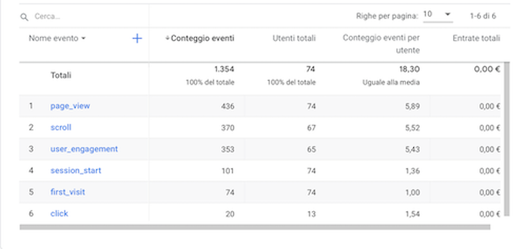

PROJECT MANAGEMENT PLAN
Abstract
Spinti dalla curiosità di sei diversi qr-code sparsi per Bologna, tutti i passanti che si trovano in possesso di uno smartphone potranno, attraverso una semplice scannerizzazione, immergersi in un’esperienza del tutto nuova e stimolante. Il progetto “Punti di Vista” propone brevi poesie scritte da una studentessa universitaria che racconta del luogo in cui ci si trova attraverso il suo punto di vista, permettendoci di uscire momentaneamente dalla quotidianità, per tuffarci in una creativa esperienza di immedesimazione.
Bench Marking
Questo progetto ha come principale obiettivo quello di regalare un’esperienza inaspettata che rompa il monotono evolversi delle nostre giornate, che spesso ci porta ad attraversare luoghi e momenti della nostra vita con passività e alienazione. Vorremmo che queste poesie stimolassero le persone ad uno sguardo più attento, tanto verso se stessi quanto verso gli altri. Il Target primario è rappresentato da qualsiasi persona di età compresa tra i 16 e i 35 anni. I competitors presi in esame presentano caratteristiche appartenenti al nostro sito in quanto non siamo a conoscenza di altri progetti che propongono una raccolta gratuita di poesie accessibili attraverso un itinerario di qr-code sparsi per la città. Essi sono rispettivamente:
DIETRO LA MASCHERINA
Questo è un progetto che fa parte della comunity “Produzioni dal basso”. Il sito è graficamente coerente e ben strutturato in quanto è un progetto sponsorizzato da una pagina nazionale di crowd-founding. A nostro avviso l’unica critica che si potrebbe fare riguarda l’utilizzo di qr-code come metodo di sponsorizzazione: se scannerizzare è alla portata di chiunque abbia con sé uno smartphone, poter sostenere economicamente il progetto non lo è. Al contrario, nel nostro sito, la curiosità di un qr-code ignoto, continua nella scoperta di un servizio inaspettato, gratuito e fine a se stesso.
Ma Rea
L’artista ferrarese Ma Rea, da anni si cimenta nell’allestire la città di Bologna con poesie proprie rimovibili, con lo scopo di riavvicinare le persone all’arte poetica e permettere a chiunque ne senta il bisogno di poterle prendere e portarle a casa. Se da una parte il progetto affascina e incuriosisce, dall’altra non è garantito a chiunque passi per la strada di poter leggerle e lasciarsi affascinare. In più, per i curiosi, non esiste un sito che spieghi il progetto e l’intento dell’artista.
Struttura e Layout
Architettura del sito
Wireframe: HOMEPAGE
Wireframe: MAPPA
Wireframe: IO
Wireframe: LUOGO
Look & Feel Il nostro sito ha come principale obiettivo quello di mostrare nuovi punti di vista sulla città e di permetterci di immedesimarci in essi. La visione aerea di Bologna presente nello sfondo, richiama il concetto di molteplicità di prospettive attraverso la presenza di numerose finestre dalle quali si ha una visione sempre diversa della stessa piazza. Le immagini esplicative dei luoghi in cui sono posizionati i qr-code non ritraggono i posti in maniera canonica, ma sono scattate dal punto di vista che si avrà una volta arrivati in loco. Questo perché da una parte si ha l’intento di catturare l’attenzione e la curiosità di chi le osserva, mentre dall’altra serve a semplificare il ritrovamento del qr-code in spazi particolarmente ampi (facilitato tra l’altro anche dalle posizioni specifiche dei link nella pagina mappe). Essendo l’autrice delle poesie una giovane studentessa , abbiamo scelto il font dei titoli principali ('Amatic SC', cursive) per richiamare una scrittura a mano libera, dal tratto imperfetto e veloce. Il font delle singole poesie ('Inconsolata', monospace), rievoca invece una scrittura a macchina, più ricercata e meno frettolosa. Questo perché Caterina nei luoghi ci è capitata senza prevederlo, ma la ricerca delle parole per esprimersi è tutt’altro che casuale. Anche i due colori principali del sito, il bianco e il nero, rimandano all’idea di pagina di taccuino e in generale alla scrittura. Un terzo colore utilizzato è il giallo (#F5D56E) che serve invece per dare uniformità al sito, richiamando la palette calda dei colori sullo sfondo. Il logo del sito è un occhio aperto con un puntino sotto che ribadisce il nome del sito stesso “punti di vista”. L’occhio è ben aperto, vigile e attento, proprio come vorremmo che lo sguardo dei nostri lettori sia. La struttura del sito è semplice e molto intuitiva, questo per semplificarne l’utilizzo e per mantenere il focus sui testi.
Linguaggi e strumenti
LINGUAGGI: Html e CSS STRUMENTI: Bootstrap è la libreria di template dalla quale abbiamo preso alcuni codici per la creazione del sito. Fontawsome è il toolkit di icone utilizzato per il sito. Google font è la libreria dalla quale abbiamo preso gli stili dei caratteri di testo. GitHub è il servizio di hosting che ha permesso a “Punti di Vista” di essere on-line.
STRATEGIE DI COMUNICAZIONE
background
“Punti di Vista” è un progetto innovativo che unisce l’utilizzo dell’elettronica, sempre più presente nelle nostre vite, all’espressione culturale della poesia, favorendo una riscoperta di quest’arte in un modo più accattivante e vicino ai giovani. Così come gli altri comeptitors che utilizzano i qr-code, il nostro progetto parte da un voler stimolare la curiosità dei passanti. A differenza degli altri siti, però, “Punti di Vista” non lascia che l’esperienza positiva dell’aprire un sito senza sapere a cosa si vada in contro svanisca con la venuta a conoscenza di che cosa sia, ma continua a stimolare l’utente con un nuovo punto di vista a lui prima sconosciuto, un fare poesia fresco e innovativo ed un modo di vivere l’arte in maniera leggera e gratuita.
Obiettivi comunicativi
Il progetto, attraverso l’utilizzo del sito web, si prefigge di promuovere un’attenzione maggiore verso la molteplicità di modi di vivere e vedere il mondo. Inoltre, altro importante scopo è quello di riavvicinare le persone al concetto più puro di arte, in una maniera nuova e stimolante. Caratteristica fondamentale che trapela anche dalla pagina “mappa” è che ogni poesia può essere vissuta in maniera indipendente, ma mostrando la loro posizione sulla cartina di Bologna, vi è anche la possibilità di scegliere di percorrere l’intera mostra attraverso un itinerario personalizzato, scoprendo anche luoghi della città meno noti.
Target Audience e Messaggio
Il sito si rivolge essenzialmente a chiunque sia in possesso di uno smartphone e tanta curiosità. Nello specifico riteniamo che le persone tra i 16 e i 35 anni siano sicuramente a conoscenza dello scopo dei qr-code e siano in grado di utilizzarli. Il target è costituito sia dagli abitanti della città, che da tutti coloro che si trovano a percorrerne le vie. Inoltre i testi, caratterizzati da una forte espressione emotiva, possono essere particolarmente evocativi per questa fascia di persone ancora in crescita. Lo scopo del progetto è infatti evadere dalla propria quotidianità, insegnando a sapersi fermare e ad apprezzare anche le cose più semplici. Riteniamo che questo possa essere particolarmente liberatorio per i più giovani, visto anche il pesante momento storico che stiamo affrontando. Essendo la nostra audience principalmente giovanile, il mezzo di comunicazione più efficace sono i social media, nei quali è possibile promuovere il progetto in atto. Partendo però quest’ultimo dalla scannerizzazione dei qr-code e non dalla promozione del sito stesso, la poca visibilità dei qr-code nei luoghi fisici potrebbe risultare una barriera comunicativa.
Promozione
Il progetto si autosponsorizza attraverso la presenza dei qr-code nella città. Parallelamente abbiamo scelto di utilizzare Instagram per aumentarne la visibilità. Avendo Caterina un profilo privato e uno dedicato alle proprie creazioni, sfrutteremo quello collegato al sito nel footer per postarne le sponsorizzazioni.
Valutazione
Gli obiettivi del progetto sono difficilmente valutabili in quanto particolarmente soggettivi. Abbiamo scelto di valutare la visibilità del nostro sito attraverso l'utilizzo di google analytics, ponendoci l'obiettivo di raggiungere 50 visualizzazioni. 